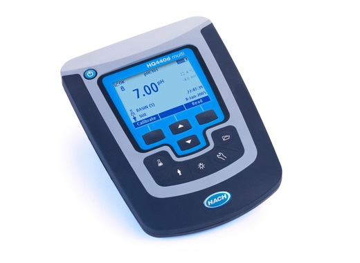
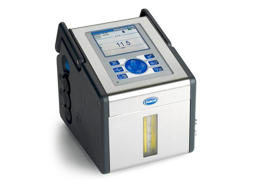
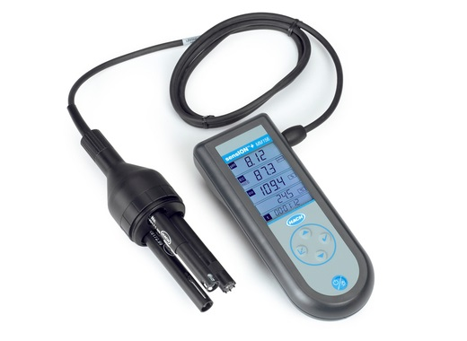
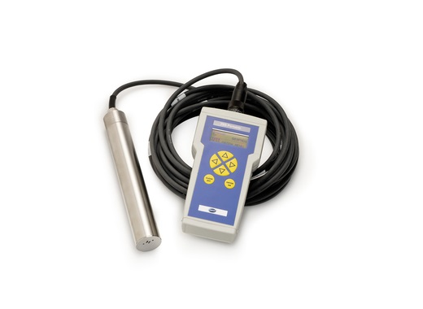
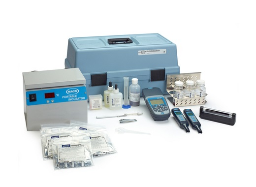
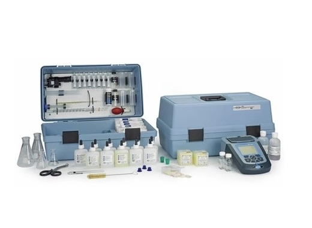
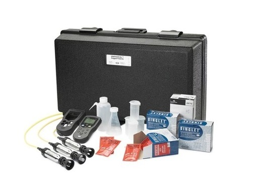
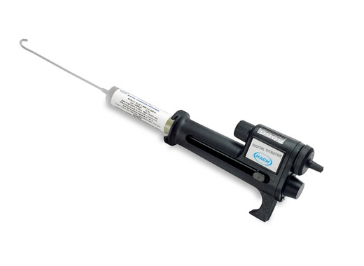

больше видео
HQD - Анализатор
Все измерительные приборы HQD имеют усовершенствованный, но простой пользовательский интерфейс, который не требует инструкций или обучения для работы. Измерители HQD подключаются к интеллектуальным датчикам IntelliCAL и автоматически распознают параметры тестирования, историю калибровки и настройки метода для минимизации ошибок и времени настройки.больше видео



больше видео
Orbisphere 3100
Использование люминесцентной технологии измерения концентрации кислорода (LDO) в работе анализатора Orbisphere 3100 обеспечивает эффективность работы и точность измерения концентрации растворенного кислорода. Калибровка/обслуживание требуются не чаще раза в год. Диапазон 0-2000 мкг/л (ppb). Погрешность +/- 0.8 мкг/л или +/-2%больше видео

больше
MM156 - Портативный многопараметрический измеритель
Портативные комплекты Sension+ разработаны в качестве комплексных решений для полевых условий – от рН-метров с одним параметром до многопараметровых систем для одновременных измерений рН, температуры, проводимости и окислительно-восстановительного потенциала (ОВП), либо для измерения растворенного кислорода с помощью единственного многосенсорного датчика.больше

больше
TSS Portable - прибор для мутности и твердых взвесей
Компактный прибор для аналитического определения в режиме единичных, с заданным интервалом, или непрерывных измерений. Диапазон измерений мутности: 0,001 - 9999 FNU. Диапазон измерений взвешенных веществ: 0,001 - 400 г/л. Длина кабеля: 10 м. Рабочее давление: 0 - 10 бар.Диапазон рабочих температур: 0 - 60 °Cбольше

больше
Портативная лаборатория
Портативная лаборатория включает в себя: колориметр DR 900, карманные анализаторы TDS и pH, переносной инкубатор, переносную ультрафиолетовую лампу, носитель и аппаратуру для тестирования кишечной палочки, а также 8 Тестов для определения качества воды.больше

больше
Портативные Лаборатории
Самая универсальная портативная лаборатория, включает в себя полный набор инструментов и реагентов для определения более 20 параметров. Включает колориметр DR 900, мультиметр HQ40d, рН-электрод PHC201, датчик проводимости CDC401, цифровой титратор, иллюстрированное руководство по эксплуатации, руководство по применению, наборы реагентов и все необходимое оборудование в прочном футляре для переноски.больше

больше
Мобильные лаборатории с различными конфигурациями.
Предназначен для определения следующих параметров: pH, проводимость / TDS и растворенный кислород (DO). Портативный мультиметр Hach HQ40D представляет собой двухканальный усовершенствованный ручной цифровой измеритель, который позволяет не только предполагать результаты измерений.больше

больше
Цифровой титратор
Цифровой титратор Hach служит для удобства выполнения точного (±1 %) ручного титрования и устраняет проблемы, связанные с нерасфасованностью раствора и хрупкостью стеклянных бюреток. Измерение восемнадцати параметров, в том числе содержания хлора и железа, а также жесткости. Заменяемые картриджи с титрантом.больше
ციფრული ტიტრატორი
პორტატული ციფრული ტიტრატორი იძლევა საშუალებას ტიტრაციის გაკეთების მაქსიმალური სიზუსტით. ახლავს საკუთარი კარტრიჯები 40 სხვადასხვა ელემენტის გასატიტრად. შესაძლებელია როგორც ინდივიდუალური ხელსაწყოს, ასევე ხელსაწყოს და სხვადასხვა დამხმარე კომპონენტების ერთ ნაკრებად შეკვეთაбольше
ციფრული ტიტრატორი
პორტატული ციფრული ტიტრატორი იძლევა საშუალებას ტიტრაციის გაკეთების მაქსიმალური სიზუსტით. ახლავს საკუთარი კარტრიჯები 40 სხვადასხვა ელემენტის გასატიტრად. შესაძლებელია როგორც ინდივიდუალური ხელსაწყოს, ასევე ხელსაწყოს და სხვადასხვა დამხმარე კომპონენტების ერთ ნაკრებად შეკვეთაбольше